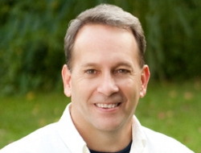

New Patients
We would love to partner with you in your health. Our patients are our priority, and our staff provides unmatched service with our cutting-edge medical treatments. We look forward to showing you what it means to try medicine again for the first time.

Thank you for taking the time to learn more about Everything Well. For over 20 years I've had the privilege of practicing medicine and encouraging others to be good stewards of the gift of health.
My formal training is in family practice and sports medicine. Several years ago I realized that the insurance-driven, traditional healthcare model is a disease model, not a health model. This form of care is more concerned with making patients "less sick" rather than encouraging health and wellness. After years of trying to promote health and care for my patients amidst increasing regulations, time-constraints, and statistic based protocols, I knew in my heart there was a better way to practice medicine.
That decision 10 years ago has now developed into Everything Well. I have returned to the roots of medicine as it was meant to be practiced. Everything Well embraces you as the most influential factor in your health. All the prevention and treatment concepts you have heard me emphasize over the years is now available under one roof. I would be honored to have you as a patient to transform your health and your life. I look forward to serving you and your family in the weeks, months and years ahead.